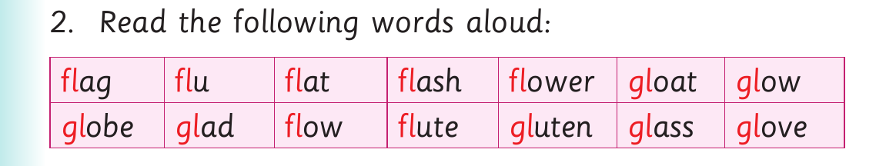

Words with fl and gl consonants - continued
Activity 1

1. Name the following pictures: (a) (b) (c) (d)

2. Read the following words aloud: fl ag fl u fl at fl ash fl ower gl oat gl ow gl obe gl ad fl ow fl ute gl uten gl ass gl ove
Activity 2
Read the following sentences aloud: (a) The tyre is flat. (b) The policeman is raising the national flag. (c) My friend has flu.